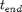

Contents
function MainPoreNetwork
Overview
This Matlab file is the main file for a series of files: (i) CreateGeometry.m, where the skeleton of the network is build (ii) RandomField.m, where random values are assigned to each pore (iii) CalculateFlow.m, where the fluid flow is solved for the network and (iv) ComputeTransport.m, where the transport of several species is computed.
Further details on the used methods can be found in 'A reactive transport modeling approach to simulate biogeochemical processes in pore structures with pore-scale heterogeneities', which can be accessed by http://dx.doi.org/10.1016/j.envsoft.2011.10.010
Copyright (C) 2013 Falk Heße. The terms of the license agreement can be found in the README.txt.
Generating the geometry
The geometrical parameters are defined as follows:
- n, which should be a factor of 4 and represents the X axis
- m, which should be even and represents Y axis and
- , which represents the pore length.
n = 120; m = 36; l_pore = 0.001; GeometryCoeffs = struct('xIncr', n, 'yIncr', m, 'LengthOfPore', l_pore);
In the first step the raw geometry is generated, having a hexagonal grid and uniform pores of length .
GeometryData = CreateGeometry(GeometryCoeffs);
This results in a uniform hexagonal grid.
Assigning the random pore radii
The parameters of the random fields are:
- , which is the correlation length in the x-direction
- , which is the correlation length in the y-direction
- , which is the expectation value of the random field and
- , which is the variance of the random field and
- , which defines the variogram function of the random field.
lambda_x = 0.005; lambda_y = 0.005; mu = 0.16e-3; sigma2 = 5e-9; func = 'Gauss'; RandomCoeffs = struct('lambda_x', lambda_x, 'lambda_y', lambda_y, 'mu', mu, 'sigma2', sigma2, 'func', func);
In the second step random radii values are assigned to each pore of the raw geometry.
RadiiData = RandomField2DUG(GeometryData, RandomCoeffs);
After this step heterogeneous radii are assigned to each pore.
Calculating the flow field
The parameter of the flow field are
- , which is the pressure drop along the geometry.
delta_p = 62.15;
FlowCoeffs = struct('delta_p', delta_p);
In the third step the volumetric flow in each pore is solved using the HagenePoiseuille equation: . Here is the dynamic viscosity of water and is the pressure drop along pore . Mass conservation is achieved by using Kirchhoff's law. The flow direction is assumed to be from the left to the right. The flow is used in order to determine the water velocity in each pore . These data are than used in order to determine the advective transport of each species.
FlowData = CalculateFlow(RadiiData, GeometryData, FlowCoeffs);
After this calculation the flow values are assigned to each pore.
Computing the transport
The parameter of the transport are
- , which is the lenght of the time interval,
- , which is the beginning of the time interval,
- , which is the lenght of the step size and
- spec_no, which is the number of chemical species.
t_end = 60; t_0 = 0; Delta_t = 0.05; spec_no = 3; TransportCoeffs = struct('tend', t_end, 'time', t_0, 'dt', Delta_t, 'spec_no', spec_no);
In the last step the reactive transport for chemical species is solved using the advection-diffusion-reaction equation within each pore . Here is the time, is the concentration of species in pore , is the diffusion cofficient of each species and respective production and consumption rate. The last term is computed by virtue of the BRNS libary.
TransportData = ComputeTransport(FlowData, GeometryData, TransportCoeffs);

After this step concetration values for each species are assigned to each pore in each time step.
Postprocessing
Several routines can be preformed here like plotting and saving.
end